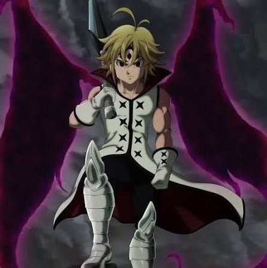
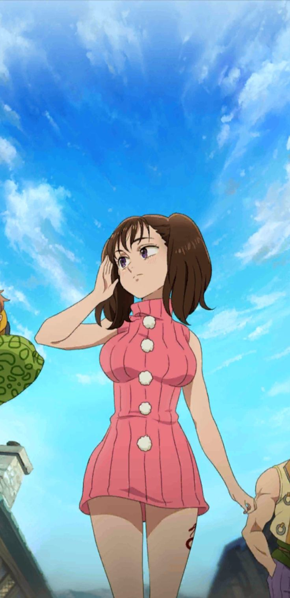

Seja bem-vindo ao projeto pecados


Ele é o capitão dos Sete Pecados Capitais e representa o Pecado da Ira, associado ao dragão. Apesar de parecer um adolescente, Meliodas tem mais de 3.000 anos. Ele é, na verdade, o filho mais velho do Rei Demônio e já foi líder dos Dez Mandamentos. Seu grande amor é Elizabeth. A relação dos dois está ligada a uma maldição que se repete através de várias vidas. Seu símbolo é o Dragão, e a marca fica em seu braço esquerdo. Ele é dono do Chapéu de Javali, uma taverna que viaja junto com os personagens. Hawk é seu companheiro inseparável e, apesar das piadas, tem uma conexão importante com a história. Uma de suas habilidades mais famosas é o Full Counter, que permite devolver ataques mágicos ao adversário. A espada quebrada que ele costuma carregar não é simplesmente uma espada inútil: ela possui uma importância enorme para seus poderes e para a história. Meliodas possui diferentes formas demoníacas, e quanto mais seu poder é liberado, mais assustadora fica sua aparência. Quando seu poder demoníaco se manifesta, ele pode apresentar a característica marcante dos olhos negros com símbolo demoníaco. Apesar de sua personalidade brincalhona e aparentemente pervertida, Meliodas carrega milhares de anos de sofrimento por causa de Elizabeth e de seu passado.


Diane é o Pecado da Inveja, representado pelo símbolo da serpente. Ela pertence ao Clã dos Gigantes e possui uma força física extraordinária. Sua arma sagrada é o Gideon, um enorme martelo de guerra. Sua habilidade principal é a Criação (Creation), que permite manipular a terra e as pedras. Diane é uma personagem extremamente gentil, apesar de seu enorme poder. Ela possui uma amizade muito importante com King, que se transforma em um relacionamento amoroso. Ao longo da história, Diane aprende a controlar melhor seus poderes e se torna ainda mais poderosa. Ela possui uma ligação importante com a história do Clã dos Gigantes. Diane sofre com inseguranças relacionadas à sua aparência e ao fato de ser diferente dos outros personagens. Sua história envolve acontecimentos que ocorreram milhares de anos antes dos eventos principais da série.